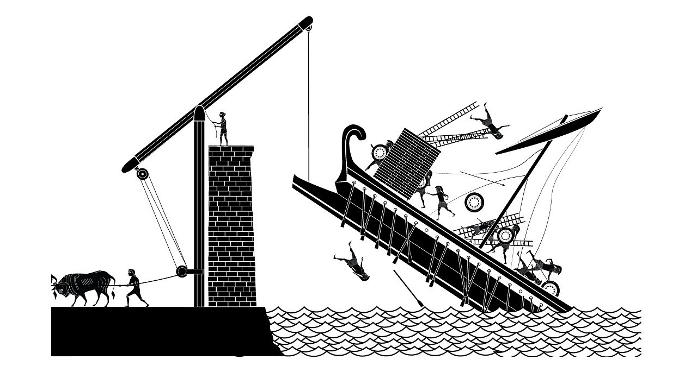
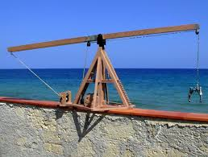
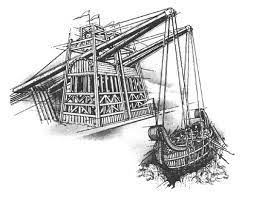

Claw of Archimedes
klaa uh aar·kuh·mee·deez
🔊
What is Claw of Archimedes ?
The "Claw of Archimedes," often referred to as "Archimedes' Claw," is a historical war machine. It is said to have been a part of the defensive systems employed by the city of Syracuse during the Siege of Syracuse in 214–212 BC, which was a key event during the Second Punic War between Rome and Carthage.
A Closer Look at the Basics of the Claw of Archimedes
The general concept of the Claw of Archimedes was to use a combination of ropes, pulleys, and levers to manipulate a large crane-like arm with a grappling hook or claw at the end. This mechanism was supposed to reach out over the water and grab hold of Roman ships, lifting them out of the water or causing them to capsize. The idea was to disrupt the Roman naval assault and create chaos among the attacking fleet.
How Does the Claw of Archimedes Impact Our Lives ?
The Claw of Archimedes is often considered one of the earliest examples of using engineering principles in warfare. While the exact details of its construction and operation remain somewhat speculative, its legendary status highlights Archimedes inventive prowess and his efforts to protect his city from invaders.
